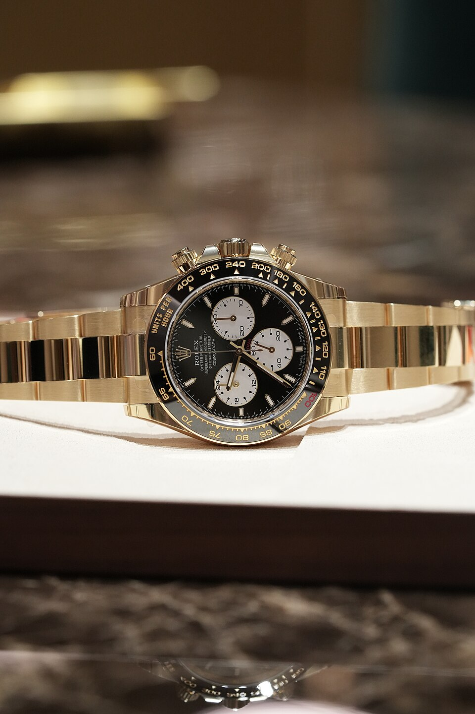

A founding partnership
Rolex describes its partnership with Daytona International Speedway from its inauguration.

A chronograph shaped by elapsed time, average speed and the long memory of the racetrack. This is an attributed Rolex reference guide under the Venturo site shell, not a Venturo product or sales page.
Family-context photograph: Rolex Cosmograph Daytona reference 126528LN, photo by Verygoodlord, Wikimedia Commons, CC BY-SA 4.0. Source and licence.
The Cosmograph Daytona uses a central chronograph seconds hand, a 30-minute counter and a 12-hour counter to read elapsed time. Its tachymetric scale pairs that interval with a measured distance to indicate average speed.
Rolex introduced the Cosmograph Daytona in 1963 for motor-racing professionals. The family’s identity, history and specifications remain Rolex reference content; Venturo does not claim to manufacture, stock or sell it.
Each card keeps the exact Rolex reference visible and opens a matching local detail state. Exact-variant photography is unavailable, so these records remain text-led and reference-only.
The Rolex motorsport story connects Daytona International Speedway’s 1959 opening with the 1963 launch of the Cosmograph, later self-winding movements and the endurance-racing vocabulary that still surrounds the family.
The timeline below is concise attributed context. It is not a Venturo heritage claim, partnership claim or manufacturing history.
Read the attributed Rolex history ↗Rolex describes its partnership with Daytona International Speedway from its inauguration.
The chronograph was designed for motor-racing professionals and built to transcend the racetrack.
Rolex introduced the current self-winding chronograph movement generation in the family’s continuing evolution.
All Daytona names, references, specifications, imagery and history on this page are attributed Rolex reference content. Venturo does not manufacture, certify, stock or sell these watches. Prices and availability are omitted. Exact-variant photography remains blocked.